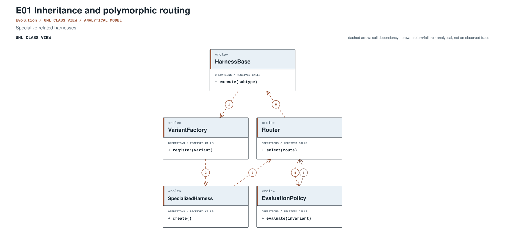
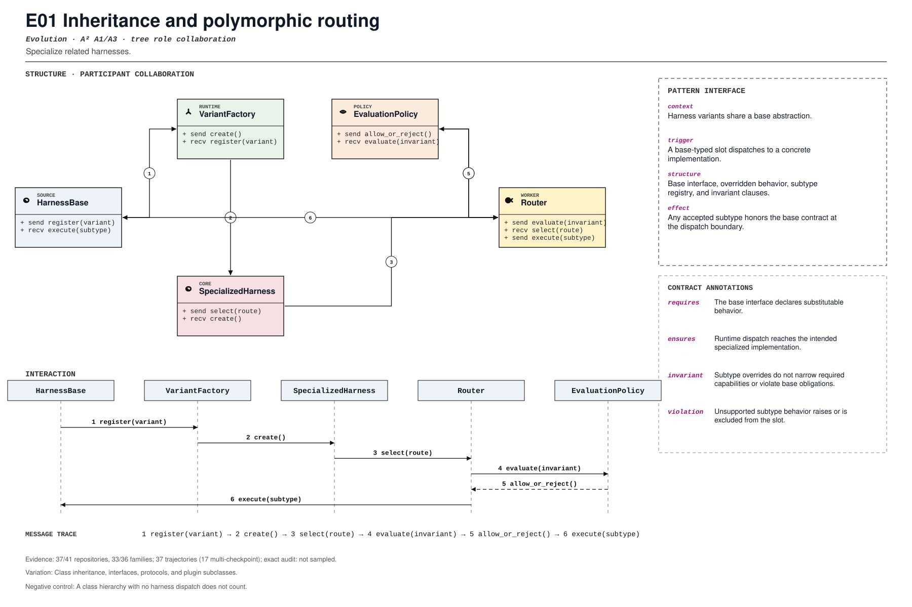

PROMPT SKETCH
Specialize the base harness only through a substitutable contract. Dispatch to the intended subtype at the declared boundary, and keep base behavior legal for every override.Specialize related harnesses.
harness_specialization_via_subtypeRECORD STATUSCandidate · v0.1.0The proposed contract drawn as participant roles, received calls, and numbered dependencies.

The same roles and calls as a class collaboration and a numbered message sequence.

Where the mechanism applies. All four dimensions belong to the proposed match, not just its vocabulary.
The obligation that clients, operators, and auditors should be able to rely on.
A class hierarchy with no harness dispatch does not count.
The hot spot is admitted only where the protected semantics survive.
Class inheritance, interfaces, protocols, and plugin subclasses.
Test substitutability, dispatch, override errors, and invalid subtype.
Did inheritance replace ad hoc branching or move toward composition?
An illustrative prompt and a small design sketch for the proposed contract. Names and APIs are invented; this is not a repository excerpt.
Specialize the base harness only through a substitutable contract. Dispatch to the intended subtype at the declared boundary, and keep base behavior legal for every override.class Harness(Protocol):
def step(self, state: State) -> State: ...
class ToolHarness:
def step(self, state):
return state.with_action(self.tools.choose(state))
class WorkflowHarness:
def step(self, state):
return state.with_workflow(self.workflows.advance(state))
def run(harness: Harness, state):
return harness.step(state)Illustrative design sketch. Inheritance is only a pattern when the base contract survives substitution. This example is a teaching aid, not implementation evidence or a conformance claim.
Each layer answers a different question. Do not substitute retrieval for review.
A concrete source anchor is available for this proposed record. It is one exemplar, not evidence that all repositories—or every contract field—conform.
Review boundary: this candidate and its specification come from an AI-assisted study. Independent human validation remains open.
91.7% of repository families in the frozen panel have at least one current cue, historical cue, or canonical source layer. This is not confirmed prevalence.
Current lexical-cue repositories: 37 / 417abc196a176alib/crewai/src/crewai/agent/core.py:223lib/crewai/tests/test_crew.py:4770Concrete Agent specializes BaseAgent.
(?i)\bclass\s+\w*Agent\w*|\bextends\s+\w*Agent\w*|\binherits?\s+from\s+\w*Agent\w*This expression is a discovery instrument only. A match is a retrieval cue—not a confirmed implementation, pointcut match, or contract proof.